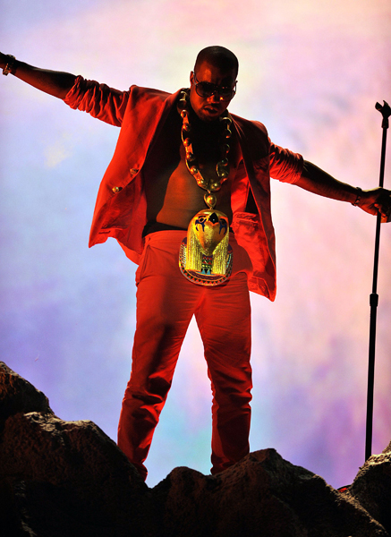
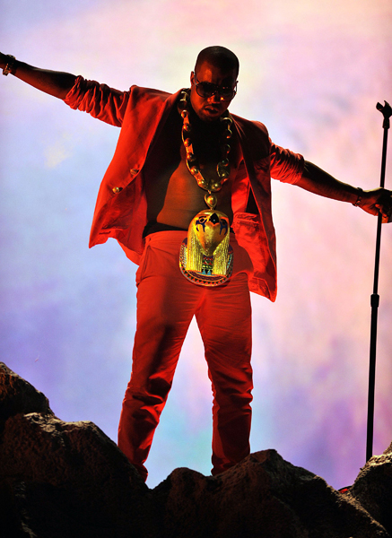

Kanye's phase 2 is his movement into more electronic music where he's far more bombastic than he began. Graduation, released in 2007, was another hit album that debuted at number one on the Billboard 200. He almost completely ditched the soulful sounds of his previous albums, looking for more electronic beats. In the album he mainly speaks about how he's living the good life, speaking of how much of a baller he is, and what fame and fortune has brought him. He also describes his struggles with returning back to his home in Chicago, and how he wasn't accepted when he first came back.
808's and Heartbreak was an album dedicated to the late Donda West, Kanye's mother. As a result, the album was more somber and depressing than the types of music Kanye normally produced. Regardless, he kept up the electronic beats, and his singing used a heavy amount of autotune. The album explores themes of heartache, loss, and how fame can make you feel alienated. The album debuted number one on the Billboard 200, once again hitting the golden standard that Kanye continuously sets for himself.
My Beautiful Dark Twisted Fantasy was Kanye's fifth studio album, released in late 2010. MBDTF is widely considered Kanye's magnum opus, his greatest piece of art work to date. The album followed a period of heavy controversy with Kanye, who exiled himself to Hawaii in 2009. The album took on a maximalist aesthetic, and it shows on a numerous amount of hit singles on the album, which include "Power" "Runaway" "Monster" and "All of the Lights". The album is a huge bombastic show of Kanye's celebrity life. The album also shows consumer culture, race issues, and the faults in the belief of the American Dream. MBDTF debuted number one on the Billboard 200, and sold more than 1.3 million copies in the U.S.
 
